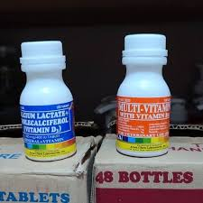

| 💊 MULTI-VITAMIN 💊 |
|  |
MULTI-VITAMIN 💰 Price: ₱50 per bottle 📌 Description: Multi-Vitamin is a liquid supplement designed to support overall health and vitality of animals. It helps improve appetite, boost immunity, and maintain proper growth. ✅ Benefits: • Boosts immune system • Improves appetite • Helps prevent vitamin deficiency • Supports healthy growth and energy 🐔🐶🐱 Suitable For: Poultry, dogs, cats, and other livestock 🕒 Usage Guide: Mix with drinking water or feed. Follow recommended dosage and provide clean water at all times. |